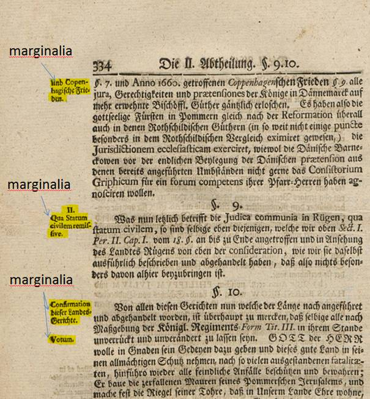
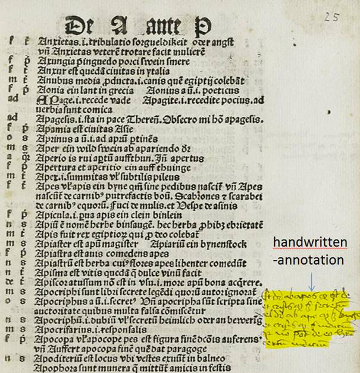

Marginalia
Notes, source references, comments, etc. at the margin (outer margin, rarely at the inner margin) of pages are referred to as marginalia. They are often set in different fonts and sizes. In the context of the Ground Truth transcription, printed marginalia are marked as such.
Handwritten annotations are treated as GraphicRegion / handwritten-annotation.

